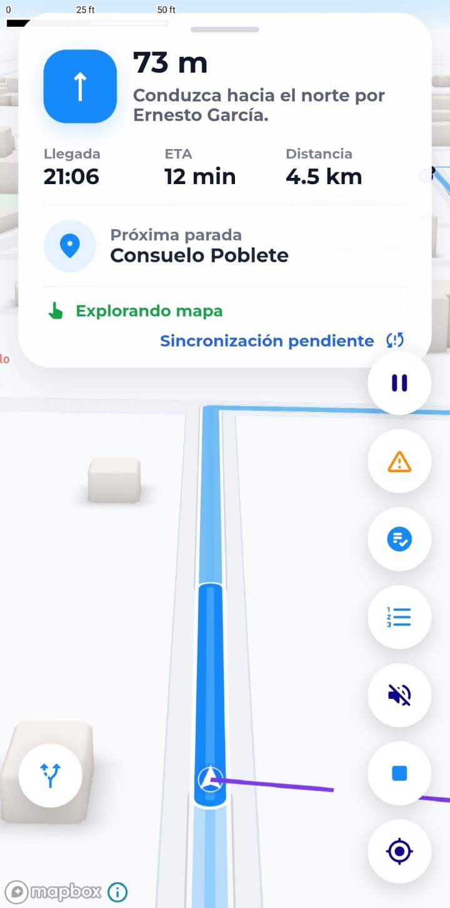

Para apoderados
Estado del trayecto en tiempo real, avisos de cercanía, llegada, entrega y alertas por retrasos.
PORTAFOLIO · CHILE
Soy Manuel Poblete. Diseño y desarrollo productos digitales, desde plataformas de transporte escolar hasta experiencias móviles centradas en las personas.
Productos en construcción
2026PROYECTO PRINCIPAL
MiEscolar conecta apoderados, conductores y colegios para acompañar el trayecto de cada alumno en tiempo real.
Los apoderados reciben el estado del recorrido y alertas de llegada o retraso. Los conductores gestionan asistencia, paradas, recogidas y entregas desde una ruta siempre actualizada.
Explorar la plataforma →
UNA PLATAFORMA, VARIAS EXPERIENCIAS
Información útil, en el momento preciso, para quienes acompañan a los alumnos.
Estado del trayecto en tiempo real, avisos de cercanía, llegada, entrega y alertas por retrasos.
Ruta activa con las ubicaciones de recogida y colegio, control de asistencia y avisos operativos.
Servicios de notificaciones, autenticación e integraciones para coordinar rutas y mantener trazabilidad.
PROYECTO SECUNDARIO
GymApp reúne la experiencia del socio y la operación del gimnasio: entrenamiento guiado, membresías, asistencia en sala y control de acceso.
La propuesta inicial está pensada para una sede piloto: menos fricción al entrar, personal localizable y una operación que se puede medir.
Explorar la solución →Listo para superar tu mejor marca.
UN ECOSISTEMA, TRES SUPERFICIES
Una experiencia coherente para socios, recepción y equipo operativo.
Rutinas por día, registro de series, descansos, progreso, membresía y credencial de acceso.
Consola web para validar credenciales, registrar ingresos y atender alertas de membresía.
Servicios para membresías, accesos, asistencia y trazabilidad de eventos del gimnasio.
REPOSITORIOS
17 repositorios destacados
en GitHub